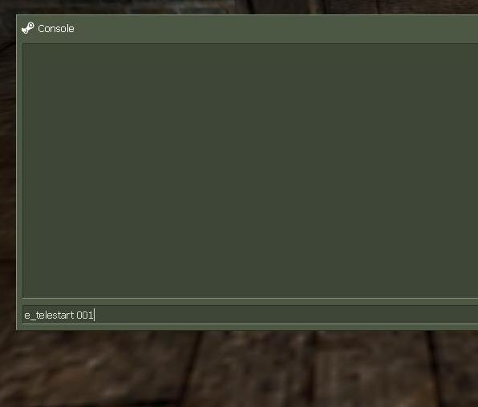
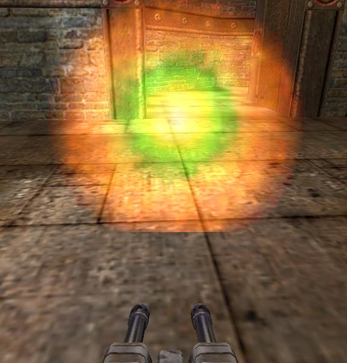
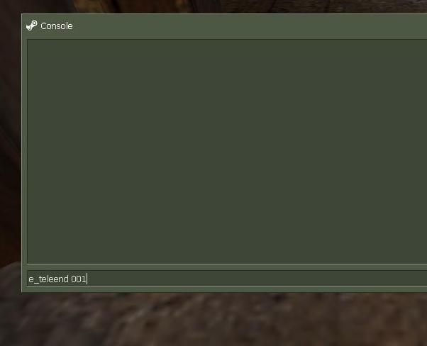
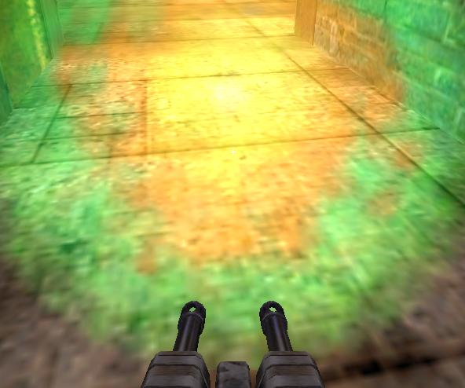
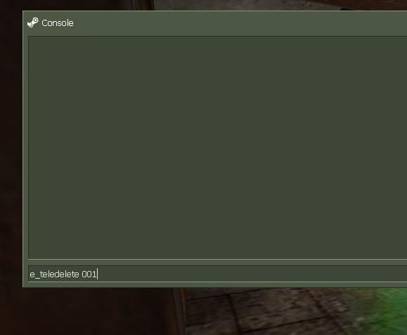
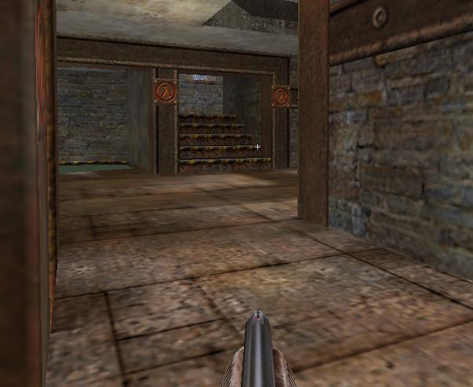

|
This section will explain how to make teleporters in Ent Mod:
Command Use:
First, you will need to enter the command in the console:

As you can see in the picture above the e_telestart command was entered. The 001 is just the name that this set of teleporters was called. The 001 part of the command can be changed to anything as long as it has no spaces. Remember, for each teleporter set you will need to use a different name.
Next, you can see the effect of the command after enter is pressed:

This is the start of the teleporter, or the place that you enter it.
Next, we will look at how you create then ending teleporter:

As you can see in the picture above the e_teleend command was entered. The 001 is the name of the starting teleporter that we want to make a end or destination for. If the 001 was not entered here and something else was in its place, you have an exit teleporter under that name with no entrance. This is not a problem, as you can always add an e_telestart to go with the e_teleend but for this example we will be only making one teleporter set.
Now, we can see the effect this command has after enter is pressed:

Now we have a fully working teleporter, walk into the teleporter you created with the e_telestart 001 command it will send you to the place you created the e_teleend 001 teleporter.
Next, we will look at how you delete teleporters:

In the picture above you can see e_teledelete command was entered. The 001 is the name of the teleporter(s) that we want to delete from the map. Since we have a start and ending teleporter named 001, both of these will be deleted by using this command.
Here, we can see the effect of this command after enter is pressed:

As you can see in the picture above, the teleporters we created are now gone.
More Examples:
All of the above examples would create a start and end teleporter
at the place you are standing when you do the commands.
This example was done with the Deathmatch Classic mod but this example holds true for all Half-Life mods. |